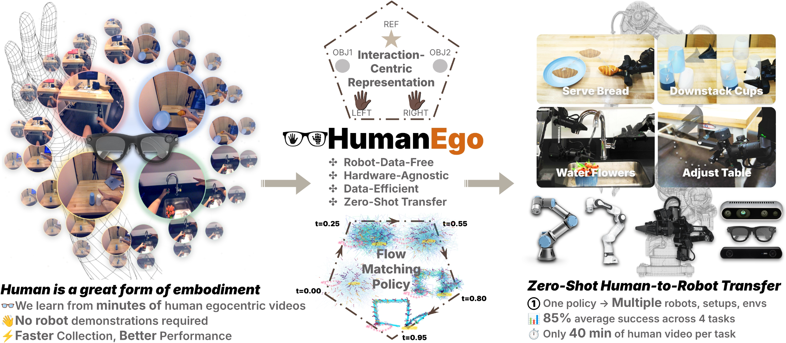
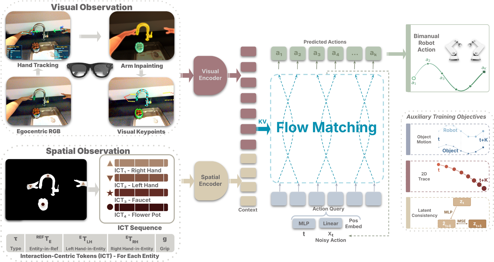
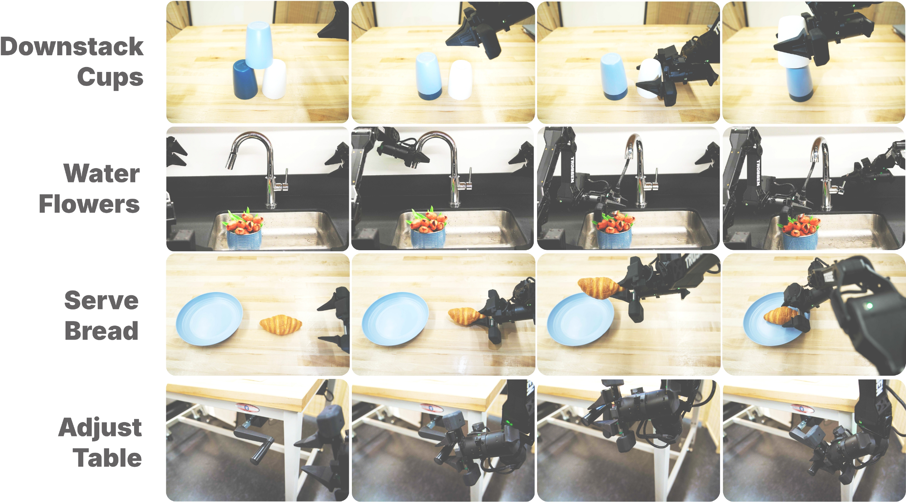
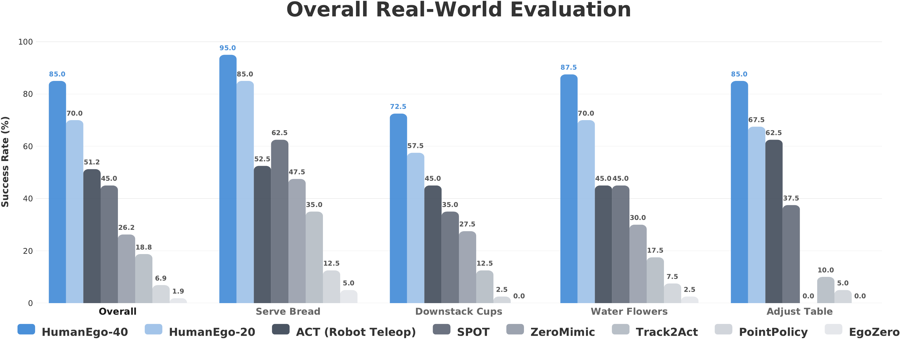

HumanEgo learns robot policy from human egocentric videos. A human wears Aria glasses and collects demonstrations (left); the egocentric videos are converted into an interaction-centric representation and used to train a flow matching policy (middle); the policy transfers zero-shot to the robot—free of environment, setup, or embodiment (right).
Human egocentric video captures rich manipulation demonstrations without any robot hardware, yet transferring these skills to robots remains challenging due to the embodiment gap between human and robot in both visual appearance and kinematics. We present HumanEgo, a framework that bridges the embodiment gap by lifting each human demonstration to an entity-level representation of hand–object interaction, and training a flow matching policy with dense auxiliary objectives that amplify supervision from every trajectory. HumanEgo is robot-data-free, hardware-agnostic, data-efficient, and zero-shot human-to-robot transferable. With only 40 minutes of human videos per task, HumanEgo achieves 85% average success across four real-world tasks (70% with just 20 minutes), outperforms matched-time robot teleoperation by 32%, and robustly transfers zero-shot across novel robots, cameras, and environments.

System overview. Arm inpainting and visual keypoints bridge the visual gap; Interaction-Centric Tokens (ICT) encode spatial relationships among all entities; a flow matching policy with dense auxiliary objectives learns bimanual robot actions from minutes-scale human data.

We evaluate HumanEgo on four tasks spanning pick-and-place (Serve Bread), multi-step coordination (Downstack Cups), contact-rich bimanual reasoning (Water Flowers), and sustained rotational control (Adjust Table).

HumanEgo achieves the highest success rate on every task, outperforming both human-video baselines and matched-time robot teleoperation.
Replace the YouTube embed URL in index.html with your actual video.
@inproceedings{humanego2026,
title = {HumanEgo: Efficient Robot Learning from Human Egocentric Videos},
author = {Anonymous},
booktitle = {Conference on Robot Learning (CoRL)},
year = {2026}
}